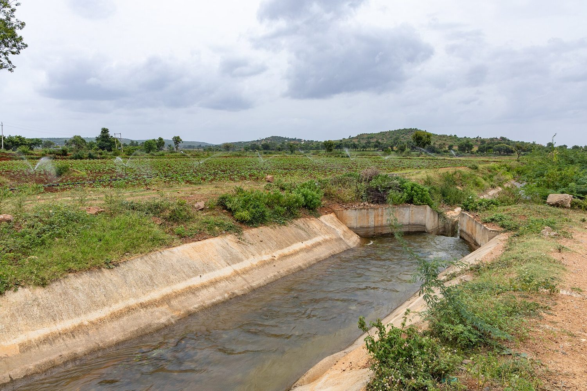
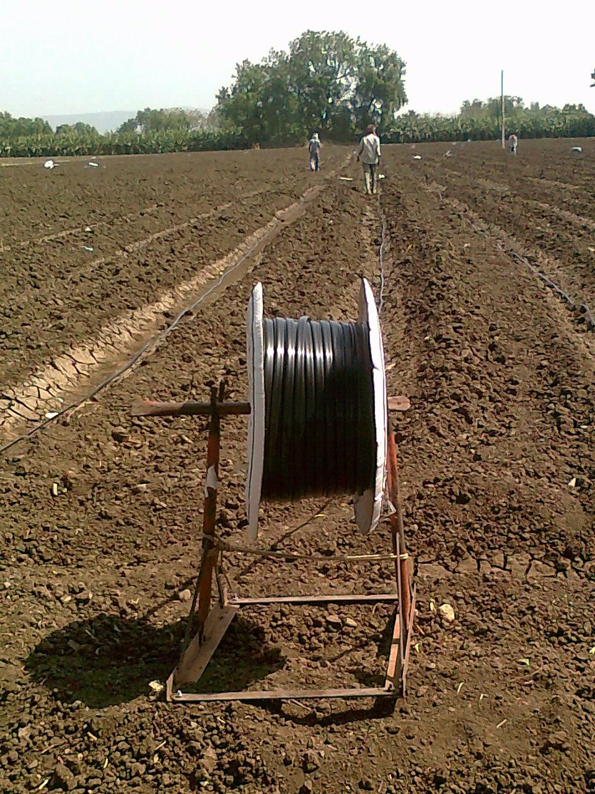

Read the ground
A recent soil trend gives the watering decision context.
For commercial farms and irrigation cooperatives. Rill combines soil readings, weather forecasts and crop stage to estimate the next watering need for each zone.

Confirm the sensor and the pump limit before approving a watering cycle.
Water demand changes with the weather and crop stage. Each new forecast requires the model to reassess every active zone and compare the recommendation with available pump capacity.

A recent soil trend gives the watering decision context.
Crop stage, forecast weather and pump capacity belong in the next daily plan.
Compare the approved allocation with what the operator records at the flow meter.

A farm operator checks sensor quality and local conditions before any watering decision. This MVP does not control pumps.
Bring together recent soil readings, crop stage and the next weather period.
Soil readings, weather and crop stage
REVIEWED OUTPUTA water-demand forecast for each irrigation zone
Change the available budget and reserve. This planning tool shows the resulting allocation; it is not a live irrigation command.
AI forecasts crop water demand and gives irrigation teams a daily zone plan. Choose a sample case and inspect the evidence behind the finding.
Zone 01, tomato, flowering stage. Latest soil moisture: 21%. Previous reading: 23%. Observation note: confirm the sensor before changing the watering cycle.
Evidence is prepared for this demonstration. Use the source reference to check the finding.See how the source becomes a specific question, a cited observation and a next action.
A farm operator checks sensor quality and local conditions before any watering decision. This MVP does not control pumps.
Evidence-linked cases, retained reports, downloads and an operational register are implemented. Azure OpenAI and OpenAI service adapters are available; connected analysis requires a configured deployment.
Follow the development stagesAgree the baseline and review the result with the person responsible for the work.
Compare operator records and flow-meter readings with the dated zone plan.
Use time-separated evaluation periods and record missing sensor or weather inputs.
Include the manager’s review and any changes required by pump or water limits.
Compare two time assumptions for daily zone plans. The estimate is calculated from your entries; it is not a measured customer result.
A farm operator checks sensor quality and local conditions before any watering decision. This MVP does not control pumps.